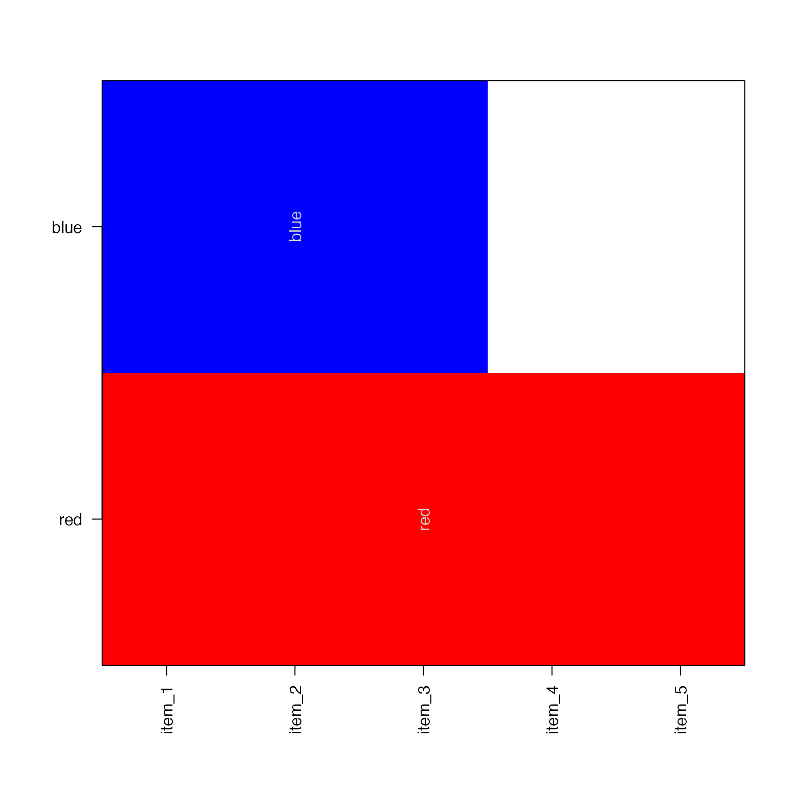
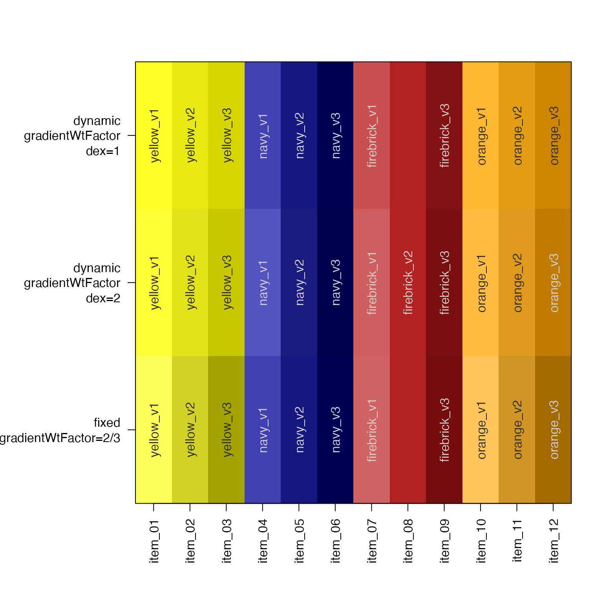
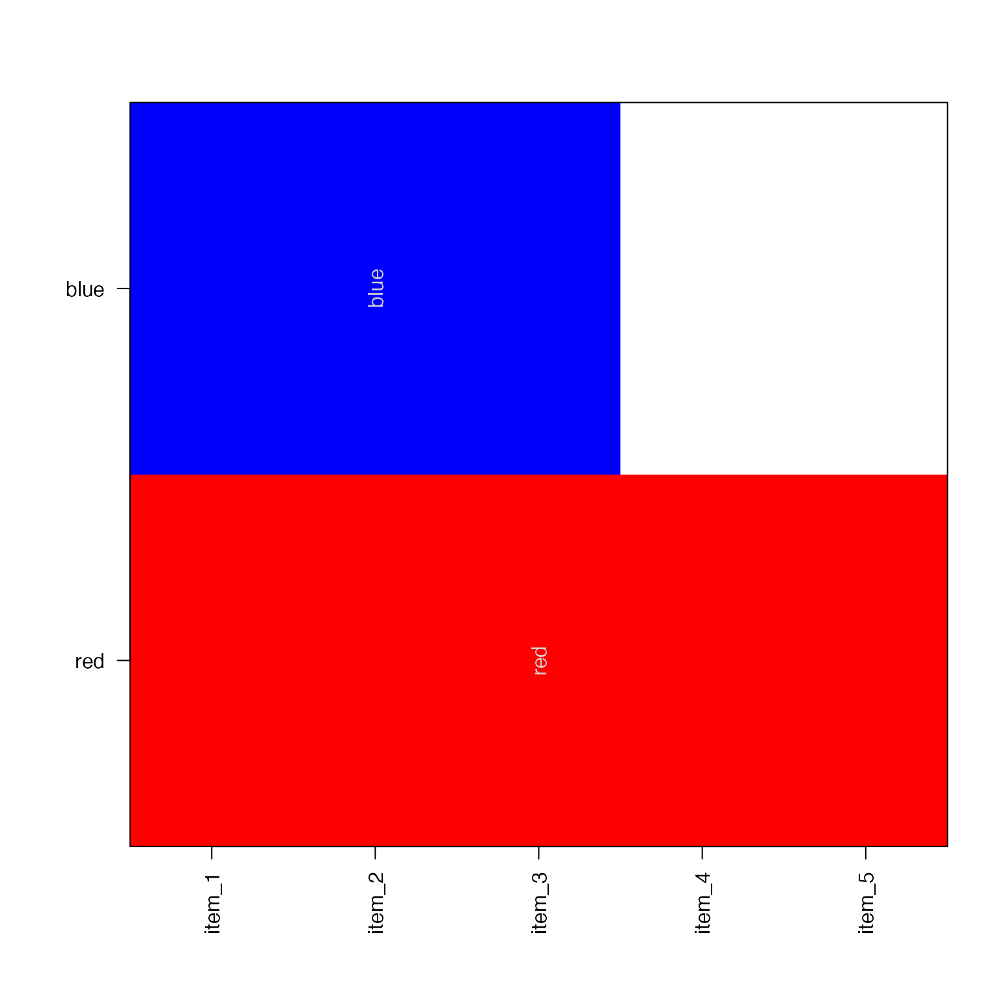
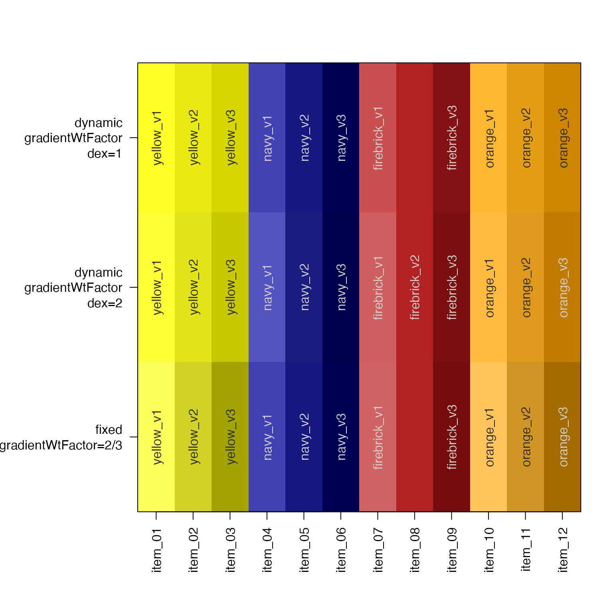

Make a color gradient
Usage
color2gradient(
col,
n = NULL,
gradientWtFactor = NULL,
dex = 1,
reverseGradient = TRUE,
verbose = FALSE,
...
)Arguments
- col
some type of recognized R color input as:
charactervector of one or more individual colors, each color is expanded into a gradient of lengthn, wherenis recycled to the number of unique colors. The valuenis applied in the order the colors appear incol.listof color vectors where each vector contains one repeated colorcharactervector of repeated colors, wherenis defined by the number of each color present.
- n
integervector of length one or more, which defines the number of colors to return for each gradient. Whenn=0then only duplicated colors will be expanded into a gradient.- gradientWtFactor
numericfraction representing the amount to expand a color toward its maximum brightness and darkness. It is recommended to usedexand not this argument.When
gradientWtFactor=NULLthis value is calculated based upon the number of colors requested, and the initial luminance in HCL space of the starting color.When
gradientWtFactoris defined, values are recycled tolength(col), and can be independently applied to each color.
- dex
numericvalue to apply dramatic dark expansion, where:dex > 1will make the gradient more dramatic, valuesdex < 1will make the gradient less dramatic, and are considered fractions 1/x.dex < 0will make the gradient less dramatic, and values are internally converted to fractions using1/(2 + abs(dex))
- reverseGradient
logicalwhether to return light-to-dark gradient (TRUE) or dark-to-light gradient (FALSE).- verbose
logicalwhether to print verbose output.- ...
other parameters are ignored.
Details
This function converts a single color into a color gradient by expanding the initial color into lighter and darker colors around the central color. The amount of gradient expansion is controlled by gradientWtFactor, which is a weight factor scaled to the maximum available range of bright to dark colors.
As an extension, the function can take a vector of colors, and expand each
into its own color gradient, each with its own number of colors.
If a vector with supplied that contains repeated colors, these colors
are expanded in-place into a gradient, bypassing the value for n.
If a list is supplied, a list is returned of the same length, where
each vector inside the list is a color gradient of length specified
by n. If the input list contains multiple values, only the first
color is used to define the color gradient.
See also
Other jam color functions:
alpha2col(),
applyCLrange(),
col2alpha(),
col2hcl(),
col2hsl(),
col2hsv(),
fixYellow(),
fixYellowHue(),
getColorRamp(),
hcl2col(),
hsl2col(),
hsv2col(),
isColor(),
kable_coloring(),
makeColorDarker(),
rainbow2(),
rgb2col(),
setCLranges(),
setTextContrastColor(),
showColors(),
unalpha(),
warpRamp()
Examples
# given a list, it returns a list
x <- color2gradient(list(Reds=c("red"), Blues=c("blue")), n=c(4,7));
showColors(x);
 # given a vector, it returns a vector
xv <- color2gradient(c(red="red", blue="blue"), n=c(4,7));
showColors(xv);
# given a vector, it returns a vector
xv <- color2gradient(c(red="red", blue="blue"), n=c(4,7));
showColors(xv);
 # Expand colors in place
# This process is similar to color jittering
colors1 <- c("red","blue")[c(1,1,2,2,1,2,1,1)];
names(colors1) <- colors1;
colors2 <- color2gradient(colors1);
showColors(list(`Input colors`=colors1, `Output colors`=colors2));
# Expand colors in place
# This process is similar to color jittering
colors1 <- c("red","blue")[c(1,1,2,2,1,2,1,1)];
names(colors1) <- colors1;
colors2 <- color2gradient(colors1);
showColors(list(`Input colors`=colors1, `Output colors`=colors2));
 # You can do the same using a list intermediate
colors1L <- split(colors1, colors1);
showColors(colors1L);

colors2L <- color2gradient(colors1L);
showColors(colors2L);
# comparison of fixed gradientWtFactor with dynamic gradientWtFactor
showColors(list(
`dynamic\ngradientWtFactor\ndex=1`=color2gradient(
c("yellow", "navy", "firebrick", "orange"),
n=3,
gradientWtFactor=NULL,
dex=1),
`dynamic\ngradientWtFactor\ndex=2`=color2gradient(
c("yellow", "navy", "firebrick", "orange"),
n=3,
gradientWtFactor=NULL,
dex=2),
`fixed\ngradientWtFactor=2/3`=color2gradient(
c("yellow", "navy", "firebrick", "orange"),
n=3,
gradientWtFactor=2/3,
dex=1)
))

# You can do the same using a list intermediate
colors1L <- split(colors1, colors1);
showColors(colors1L);

colors2L <- color2gradient(colors1L);
showColors(colors2L);
# comparison of fixed gradientWtFactor with dynamic gradientWtFactor
showColors(list(
`dynamic\ngradientWtFactor\ndex=1`=color2gradient(
c("yellow", "navy", "firebrick", "orange"),
n=3,
gradientWtFactor=NULL,
dex=1),
`dynamic\ngradientWtFactor\ndex=2`=color2gradient(
c("yellow", "navy", "firebrick", "orange"),
n=3,
gradientWtFactor=NULL,
dex=2),
`fixed\ngradientWtFactor=2/3`=color2gradient(
c("yellow", "navy", "firebrick", "orange"),
n=3,
gradientWtFactor=2/3,
dex=1)
))
